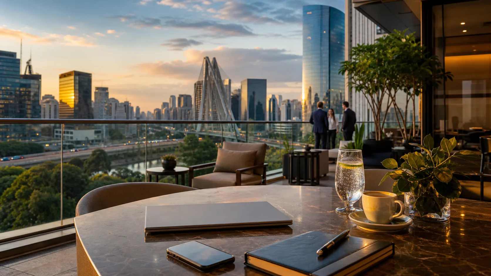

Hotel strategy
Stay near the first commitment.
The best hotel is often the one that saves the most time between airport, meetings and dinner.
A premium guide for international executives in Sao Paulo, covering hotel areas, airports, meetings, events, safety, etiquette, business dinners and discreet private resources.
In Sao Paulo, time is not a detail. It is the itinerary's quiet boss. Choose the right area and the whole trip becomes more civilized.

The best hotel is often the one that saves the most time between airport, meetings and dinner.
Guarulhos can be easy or exhausting depending on traffic, arrival time and where the hotel is located.
Restaurants, lounges and private planning are part of the executive travel rhythm in Sao Paulo.
Premium, central and polished. Strong for executives who want restaurants, hotels, shopping and easy access to Paulista.
Excellent for business dinners, offices, nightlife and a more executive social rhythm.
Modern and corporate, useful for tech, finance, malls, meetings and younger executive energy.
Strong for corporate offices, executive hotels and business meetings in the south-west corridor.
Comfortable, calmer and useful for Congonhas Airport, restaurants and longer business stays.
Business travel in Sao Paulo is really a timing game. The prize is arriving calm enough to sound clever.
Use airport hotels for late arrivals, early departures or short layovers when crossing the city does not make sense.
Useful for domestic flights and convenient for Moema, Itaim, Vila Olimpia and Brooklin.
Stay close to the venue or in a connected business area. Sao Paulo traffic is very persuasive.
Reserve time for dinner logistics. In Sao Paulo, business relationships often continue after the meeting room.
Executive travel needs practical advice that respects time, reputation and discretion.
Ride-hailing apps, trusted drivers or hotel-arranged transport are best for late nights and tight schedules.
Appearance, punctuality and clear communication matter in business hotels, restaurants and private settings.
Private services should be coordinated discreetly with clear expectations and professional standards.
The right stay depends on whether the visitor needs a polished lobby, workspace, privacy, airport access or a quieter routine between commitments.
Useful for meetings, concierge support, reliable reception, breakfast timing, transport coordination and formal business routines.
Good for privacy, workspace, flexible meals, receiving visitors appropriately and keeping a more controlled schedule.
Practical for late arrivals, early departures, layovers and travelers who cannot afford a cross-city traffic surprise.
Some international business travelers prefer private concierge support or verified companionship resources during their stay. In Sao Paulo, this should be handled with privacy, timing, adult consent, clear communication and professional coordination.
Business travel connects naturally to hotels, nightlife, safety, airports and premium services. The visitor should never feel stranded between tabs.
Answers for executives planning from abroad, from the airport or between meetings.
Jardins, Itaim Bibi, Vila Olimpia, Paulista, Moema, Brooklin and Berrini are strong choices depending on meetings, airport needs, dinner plans and desired level of privacy.
Guarulhos is convenient for arrivals, departures and airport hotels, but travel time to central business areas varies significantly with traffic and time of day.
Congonhas is useful for domestic flights and is convenient for Moema, Itaim Bibi, Vila Olimpia, Brooklin and many business-hotel areas.
Yes. Flats, apart-hotels and serviced apartments can be useful for privacy, workspace, longer stays, reception and flexible executive routines.
Executives should plan transport around meeting times, airport distance, traffic windows and evening commitments, using ride-hailing apps, trusted drivers or hotel-arranged transport.
Yes, but discretion and trust are essential. Visitors should use established resources with privacy standards, adult consent, clear communication and professional coordination.
Jardins, Itaim Bibi, Vila Olimpia and Moema are strong areas for business dinners, lounges and polished evening plans near executive hotels.
Business travelers should avoid underestimating traffic, booking hotels far from commitments, displaying valuables, vague private arrangements and discussing sensitive plans in public.